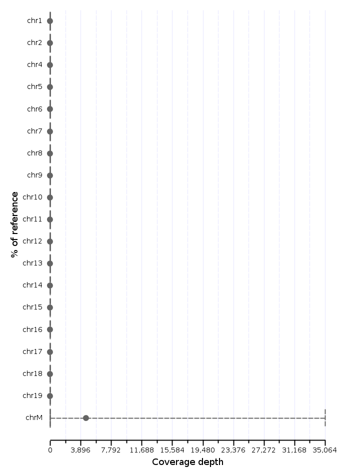

Breakdown of rna.SRR948778.bam, providing descriptive statistics for each chromosome.
| Id | N | Mean | Median | sd | q1 | q3 | 2.5% percentile | 97.5% percentile | Min | Max |
|---|---|---|---|---|---|---|---|---|---|---|
| chr1 | 195,471,971 | 0.12 | 0.00 | 17.00 | 0.00 | 0.00 | 0.00 | 1.00 | 0.00 | 26,113.00 |
| chr2 | 182,113,224 | 0.13 | 0.00 | 15.08 | 0.00 | 0.00 | 0.00 | 1.00 | 0.00 | 21,447.00 |
| chr3 | 160,039,680 | 0.07 | 0.00 | 9.94 | 0.00 | 0.00 | 0.00 | 0.00 | 0.00 | 15,009.00 |
| chr4 | 156,508,116 | 0.15 | 0.00 | 104.05 | 0.00 | 0.00 | 0.00 | 1.00 | 0.00 | 216,831.00 |
| chr5 | 151,834,684 | 0.23 | 0.00 | 27.59 | 0.00 | 0.00 | 0.00 | 2.00 | 0.00 | 55,061.00 |
| chr6 | 149,736,546 | 0.11 | 0.00 | 18.00 | 0.00 | 0.00 | 0.00 | 1.00 | 0.00 | 34,753.00 |
| chr7 | 145,441,459 | 0.19 | 0.00 | 58.09 | 0.00 | 0.00 | 0.00 | 2.00 | 0.00 | 118,050.00 |
| chr8 | 129,401,213 | 0.14 | 0.00 | 39.79 | 0.00 | 0.00 | 0.00 | 1.00 | 0.00 | 74,742.00 |
| chr9 | 124,595,110 | 0.15 | 0.00 | 6.35 | 0.00 | 0.00 | 0.00 | 2.00 | 0.00 | 6,874.00 |
| chr10 | 130,694,993 | 0.12 | 0.00 | 15.54 | 0.00 | 0.00 | 0.00 | 1.00 | 0.00 | 32,906.00 |
| chr11 | 122,082,543 | 0.22 | 0.00 | 16.04 | 0.00 | 0.00 | 0.00 | 2.00 | 0.00 | 21,670.00 |
| chr12 | 120,129,022 | 0.08 | 0.00 | 1.81 | 0.00 | 0.00 | 0.00 | 1.00 | 0.00 | 3,010.00 |
| chr13 | 120,421,639 | 0.09 | 0.00 | 19.69 | 0.00 | 0.00 | 0.00 | 1.00 | 0.00 | 33,508.00 |
| chr14 | 124,902,244 | 0.11 | 0.00 | 4.61 | 0.00 | 0.00 | 0.00 | 1.00 | 0.00 | 9,312.00 |
| chr15 | 104,043,685 | 0.16 | 0.00 | 8.28 | 0.00 | 0.00 | 0.00 | 2.00 | 0.00 | 11,204.00 |
| chr16 | 98,207,768 | 0.17 | 0.00 | 109.59 | 0.00 | 0.00 | 0.00 | 1.00 | 0.00 | 182,091.00 |
| chr17 | 94,987,271 | 0.46 | 0.00 | 131.84 | 0.00 | 0.00 | 0.00 | 2.00 | 0.00 | 212,330.00 |
| chr18 | 90,702,639 | 0.15 | 0.00 | 81.18 | 0.00 | 0.00 | 0.00 | 1.00 | 0.00 | 130,824.00 |
| chr19 | 61,431,566 | 0.16 | 0.00 | 32.31 | 0.00 | 0.00 | 0.00 | 1.00 | 0.00 | 31,157.00 |
| chrX | 171,031,299 | 0.02 | 0.00 | 2.56 | 0.00 | 0.00 | 0.00 | 0.00 | 0.00 | 3,828.00 |
| chrY | 91,744,698 | 0.00 | 0.00 | 0.04 | 0.00 | 0.00 | 0.00 | 0.00 | 0.00 | 44.00 |
| chrM | 16,299 | 4,579.01 | 8.00 | 28,663.98 | 0.00 | 51.00 | 0.00 | 35,064.50 | 0.00 | 471,340.00 |
